Skinwakler ranch : 現場の台地をボーリングしたら謎の金属片が出現 → この謎を合理的に説明する
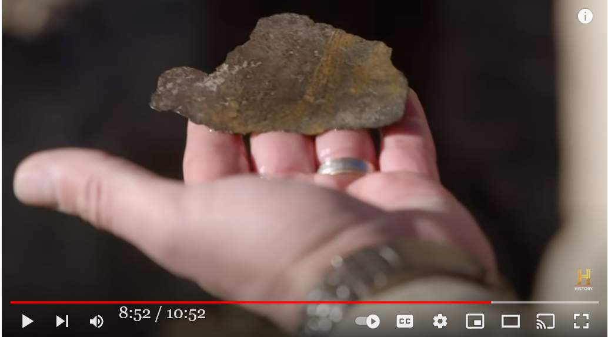
履歴
(2023-01-18) 完結 (2022-11-02) 追加 (2022-11-01) 作成 (2022-11-01 begin)前置き
- 過去記事(*1)で取り上げた金属片を発掘した時の詳しい状況を撮影した History Channel のサワリ的動画映像を見かけた。 - 調査関係者はこの金属片の出現に驚き「なぜ、この金属片が手つかずの台地の中に埋まっていたのか？ ET の宇宙船の残骸なのか？」と述べている。 - だが…。私は映像を見て、この金属片の正体に気づいた。謎は合理的に説明できる。(*1)
ref: Brandon Fugal : Skinwalker ranch での観測状況を語る (2022-10-12)▼展開
- 現地の付近で見つかった特殊な薄い金属片について。 32:00 was a dazzling display thank you 32:06 um that's one thing i know sorry i just didn't know but going back 32:12 back to the mesa and the the metallic pieces that were drawn out of the mesa 32:18 as part of that biopsy if you will not only having our own analysis capabilities on 32:25 site that we're analyzing the material and finding that it was highly unusual to see 32:31 to see those those materials right there in wafer thin form you know one specific 32:37 type on one side and then the reverse constituting another but again to seek 32:43 out and and to to get on record a a true expert i mean dr ravi's chandra from the 32:50 university of utah to weigh in and also confirm uh the the nature of this material 32:57 independently is something that i think sets our investigation and our program apart 33:04 and i've got to say this you compare our docu-series to any other effort exploring frontier topics like 33:12 this and you're not seeing i'm sorry with the exception of maybe linda moulton howe 33:18 you're not seeing the same talking heads and people that are theorists that you 33:24 see on other programs that are being used as third-party experts that are weighing in and putting their 33:30 reputations on the line with respect to their analysis and their 33:35 experience and their evaluation of what is happening at skinwalker ranch and i i 33:40 could go down the whole list but you all know i mean try to find these people are not the type of people 33:47 that are trying to sensationalize or or seek fame in in paranormal circles 33:55 these are very respected third-party experts and scientists that we brought in every year 34:01 in order to collaborate on the experiments and the research that is being conducted and i i i don't know 34:08 that there is there is enough credit given to that online within the skeptical community 34:16 we have to bring rather into that one because he was the guy who claimed he had blown that up entirely and said まばゆいばかりに輝いていました ありがとうございます メサとメサから引き出された金属片の話に戻そう。 メサとメサから引き出された金属片の話に戻りますが メサから採取された金属片のことなんですが、生検の一部として、私たち自身の分析能力だけでなく その物質を分析した結果、このような物質があるのは非常に珍しいということがわかりました。 その材料が薄片状になっているのは非常に珍しいことです。 一方は特定のタイプで、もう一方は別のタイプであることがわかりました。 ユタ大学のラヴィ・チャンドラ博士という真の専門家を探し出し、記録に残すことです。 ユタ大学のラヴィ・チャンドラ博士に意見を求め、この物質の性質を確認することができました。 独自に確認することで、我々の調査やプログラムを際立たせることができるのです。 私たちのドキュメンタリーを、このようなフロンティアテーマを探求する他の活動と比べてみてください。 リンダ・モールトン・ハウのような例外はありますが 他の番組で使われているようなトップや理論家といった人たちは 他の番組で見かけるような、第三者の専門家として発言し その人たちの評判は、彼らの分析、経験、そして何が起こっているかということに関して スキンウォーカー牧場で何が起きているのか、その分析、経験、評価に関しても。 この人たちはセンセーショナルな報道をするような人ではなく 超常現象界でセンセーショナルに報道されたり、名声を得ようとするような人たちではありません。 超常現象界でセンセーショナルに報道されたり、名声を求めたりするような人たちではありません。 実験や研究に協力してもらっています。 懐疑的なコミュニティーの中で、そのような人たちが十分に評価されているとは思えません。 懐疑論者のコミュニティでは、この件に関して十分な評価を得ているとは言えません。 ref: Brandon Fugal : Skinwalker ranch での観測状況を語る (2022-10-12)
切り出し静止画
金属片とその成分分析
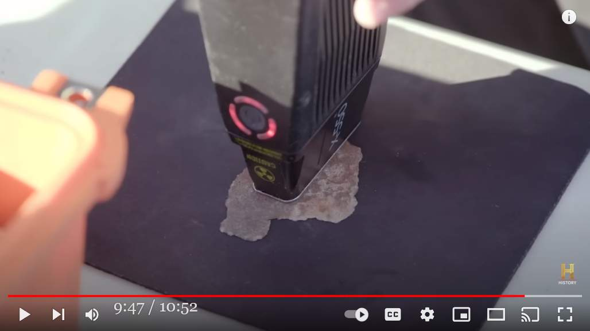 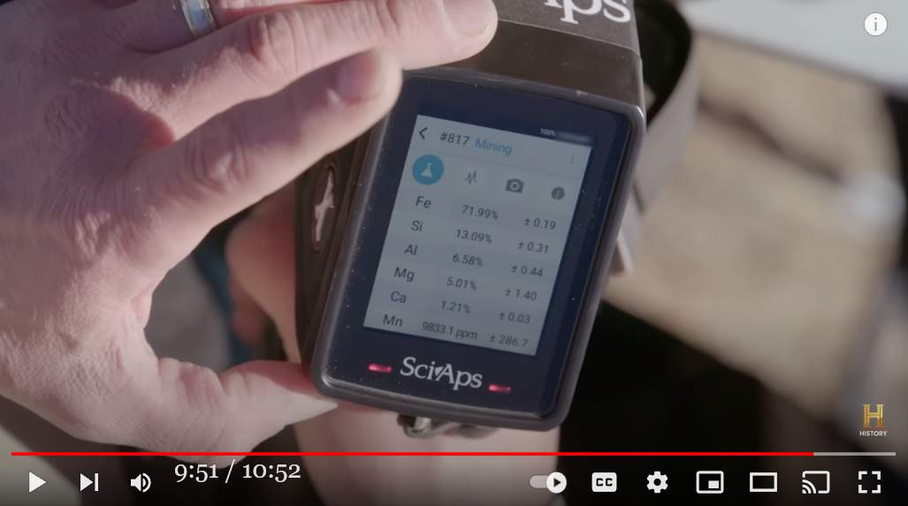ボーリング状況
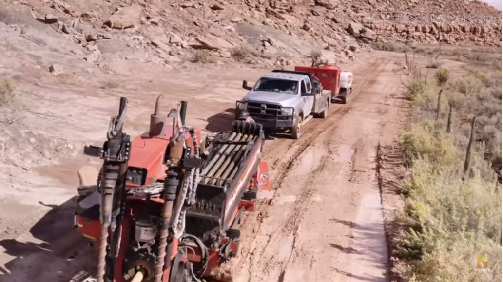 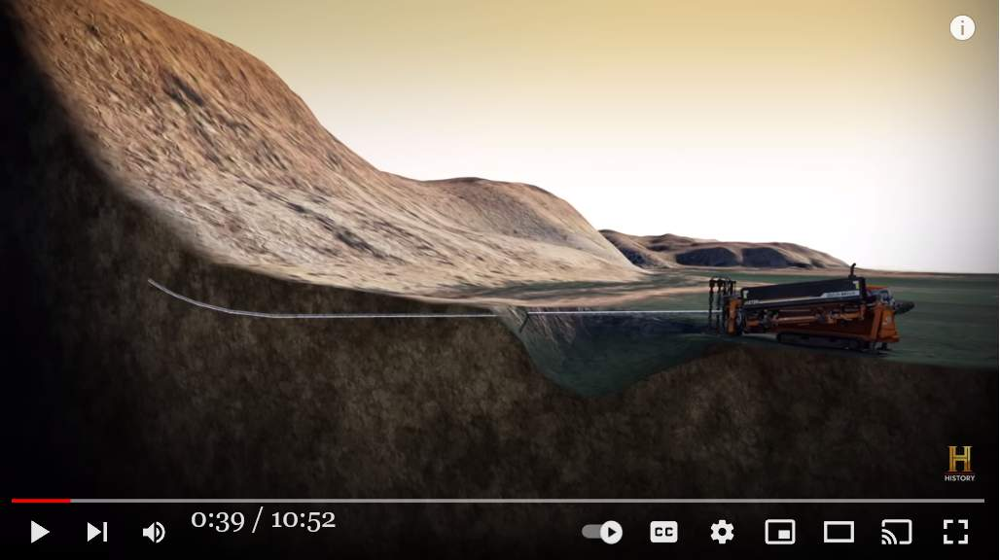 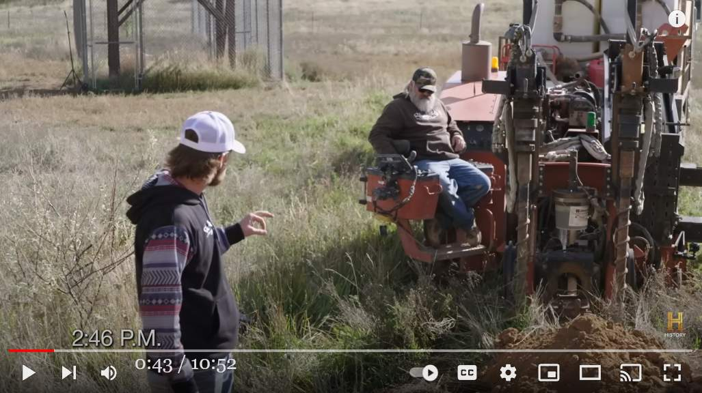 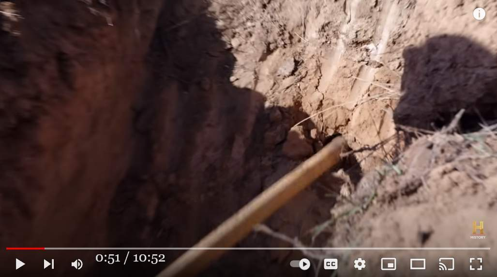 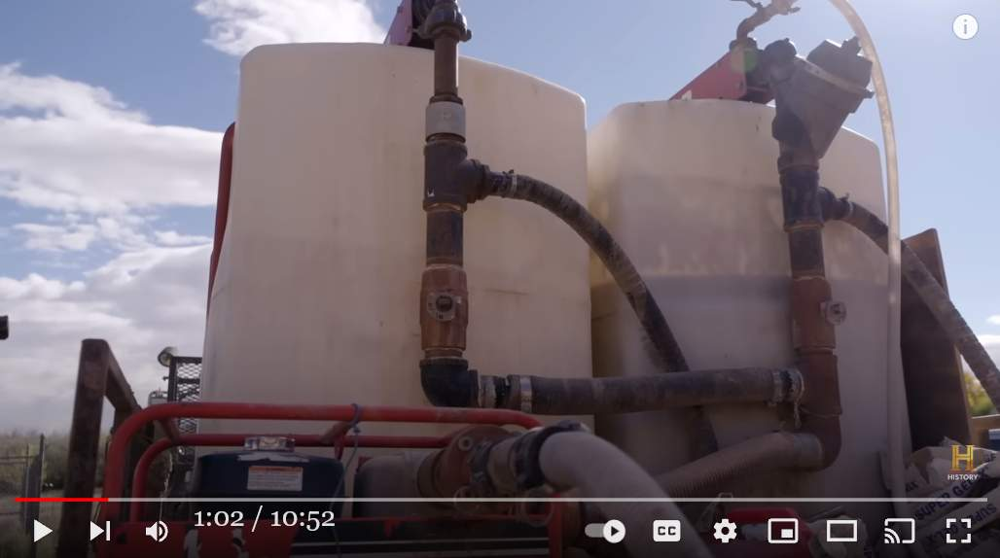 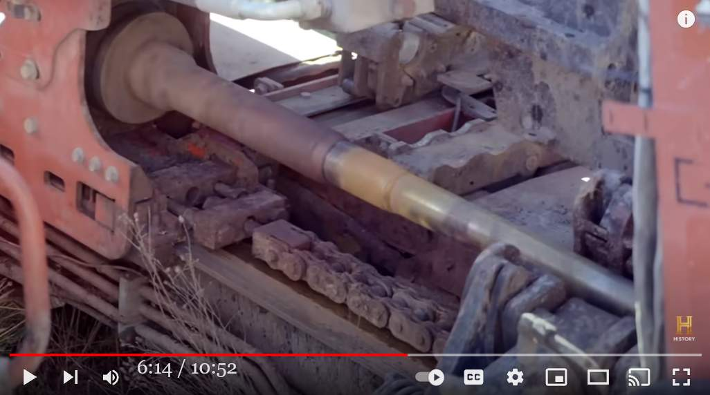 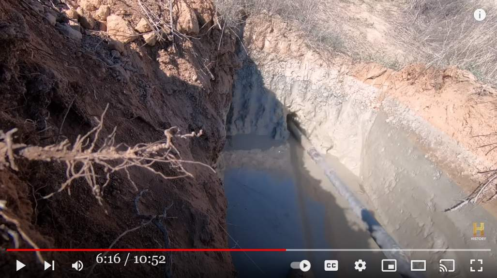 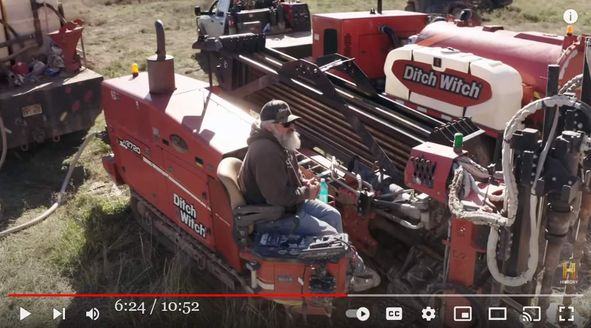 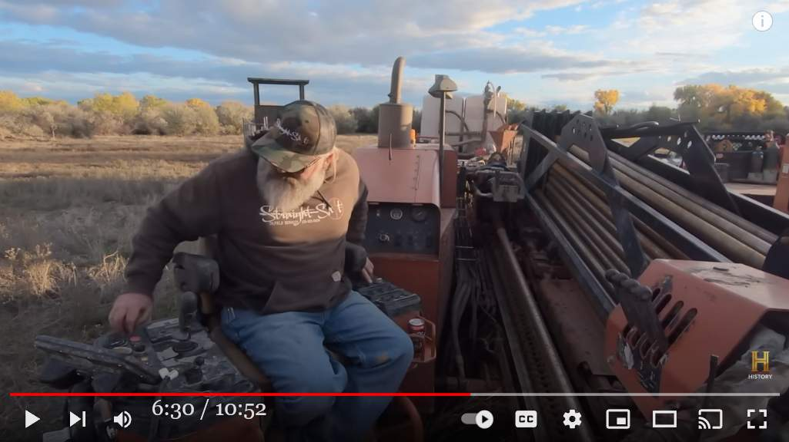 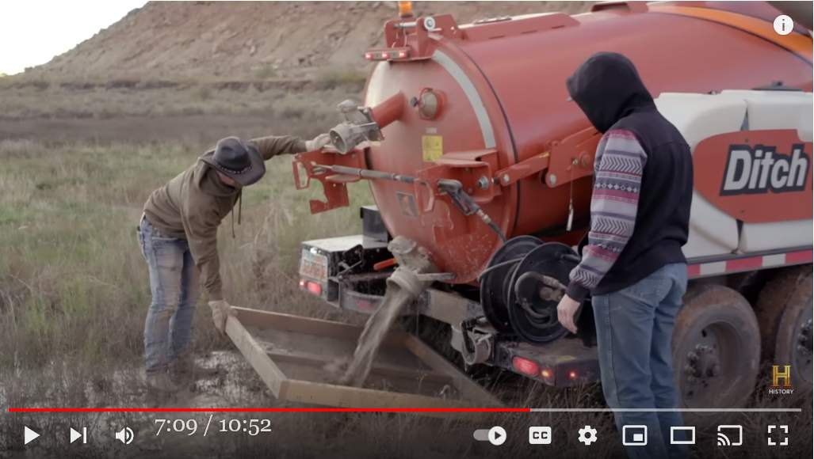 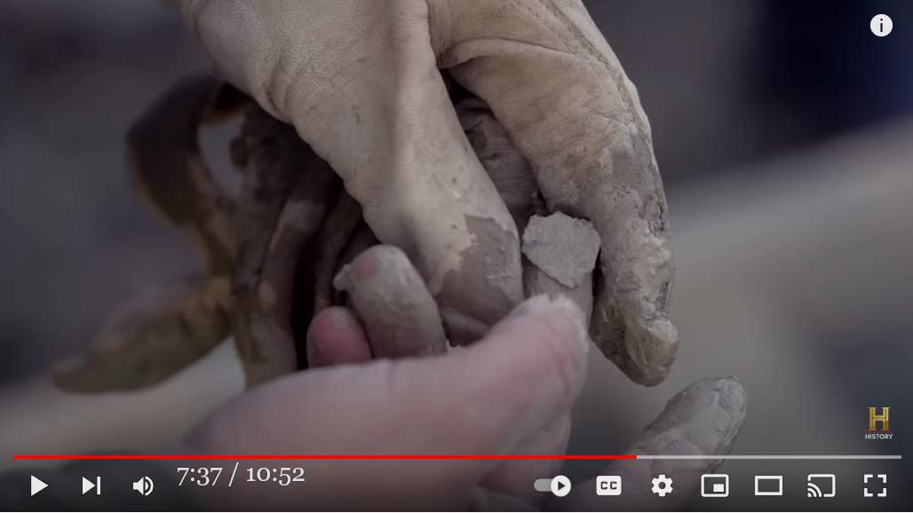 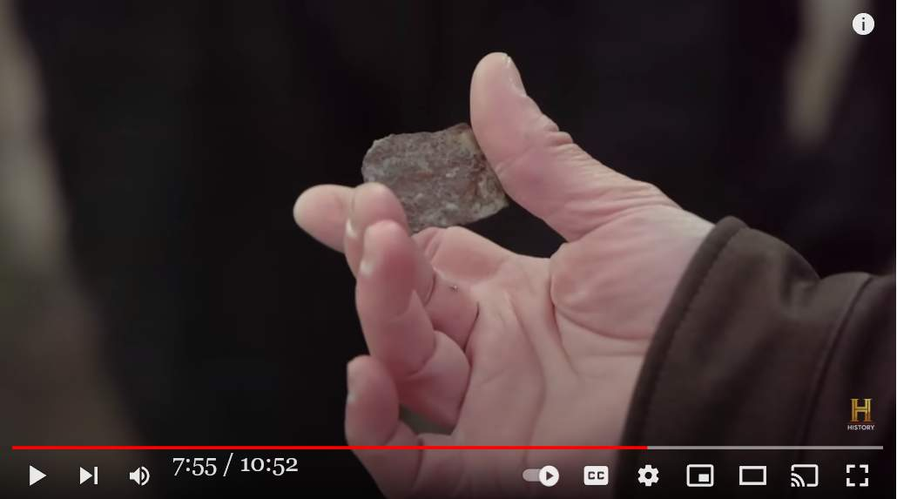
音声書写（自動生成）
▼展開
0:00 they're here awesome i'm excited for the 0:02 equipment 0:03 after last week when chris bartell who 0:06 worked security on the ranch for robert 0:08 bigelow more than a decade ago showed us 0:10 where a cave entrance in the mesa had 0:12 mysteriously been covered over we 0:14 invited a team of drillers to the ranch 0:16 to help figure out what the bigelow team 0:18 might have wanted to keep hidden aaron 0:20 and his crew from straight shot drilling 0:23 they're going to do some horizontal 0:24 drilling into the side of the mesa 0:27 the way that this horizontal drill works 0:29 is they're actually going to go down 0:31 under the road under this canal and then 0:34 be able to maneuver up and hopefully 0:37 puncture up into the mesa and see if we 0:38 find a void there 0:46 how deep are you 0:47 80 feet you're 80 feet out yep 0:52 how many gallons of fluid are we into 0:53 this now that hasn't come back out 500 0:56 out of this tank a thousand out of the 0:59 last one and four out of the first so 1:02 we're talking 2 000 gallons around there 1:06 it could be punching through into that 1:08 void 1:10 wow 1:11 whoa look at this 1:12 that's what's going on there okay so 1:14 it's there it is again 1:16 again we're doing something here that 1:18 we've not done before out here outdoors 1:20 with this thing running yep 1:23 and so 1:24 um there's a correlation followers yeah 1:28 i noticed that the spectrum analyzer is 1:30 giving us once again this mysterious 1.6 1:33 gigahertz signal like the one 1:36 recently captured at homestead 2. every 1:39 time we've seen that signal something 1:41 really strange has happened 1:43 hey brian if you guys are game i've got 1:46 some handheld instruments that you can 1:47 take out to the homesteads 1:49 you know just just wander about and see 1:51 if you get any unusual readings out 1:53 there yeah it always seems like 1:56 it's almost like a 1:57 bait and switch type of a thing you 1:59 focus your energies in one spot and then 2:01 all of a sudden stuff happens in other 2:02 areas right well do you want to go head 2:04 down to the homestead then yeah okay 2:07 let's do it 2:10 i've decided to send tom and dragon out 2:13 to the homesteads 2:15 and see if we pick up anything happening 2:17 out there 2:36 i guess we'll walk around with both the 2:38 geiger counter and then you've got the 2:40 tri-filled meter 2:42 we'll see if anything strange pops up 2:44 and keep in touch with them yeah i've 2:46 also got the lightning detector and 2:49 right now it's not measuring anything 2:51 above 2:52 background okay 2:54 yeah 2:56 let's walk around the back where we've 2:58 seen some strange stuff and then 3:00 i guess we could even poke around inside 3:02 the building a little bit okay 3:08 now what am i getting we'll get all that 3:09 oh it's a lot of noise 3:11 this doggone thing is broadcasting this 3:15 thing shouldn't be broadcasting anything 3:17 why would a device that's designed to 3:19 receive be broadcasting 3:22 hey bryant tom you copy yeah i got you 3:25 go ahead eric 3:27 he's got an 3:28 rf spectrum analyzer which is a receiver 3:31 that seems to be broadcasting 3:33 instead of just receiving 3:35 that's not good we'll just have a listen 3:38 at this 3:39 [Music] 3:48 are you okay no i just i just blacked 3:51 out 3:52 like blacked out 3:54 yeah it was like 3:56 all the blood rushed out of my 3:58 my brain 3:59 this is not okay 4:02 here help me up 4:08 dude you're shaking 4:10 you want to go yeah let's go 4:18 you can't feel you can't feel your hand 4:19 i can't feel my hand 4:21 that's your left arm it's my left arm 4:23 that's scary dude i don't just here give 4:25 me put your arm around me 4:27 i don't want to around with that 4:30 tom lewis said that he had no feeling in 4:32 his left arm 4:33 i knew it had to be something cardiac 4:35 related 4:37 hey you guys tom is experiencing stuff 4:39 he blacked out blacked out as pain in 4:42 his arms are you serious oh 4:45 he's taking him straight to the 4:47 emergency room i think so brian candice 4:50 is right behind you so you can be 4:51 watching for 5:05 we're here at the emergency room still 5:08 the doctor finally came with results 5:11 and basically 5:14 couldn't say what exactly happened to 5:17 cause tom to pass out or black out he 5:20 said my heart is skipping 5:23 beats every so often 5:26 and so 5:27 he's 5:28 running lots of lap tests see if he can 5:31 figure out why it's very 5:34 unsettling because of the sequence of 5:36 events that led up to that radio call 5:39 for for what i was experiencing and the 5:42 sounds that eric 5:44 was sharing with everyone and the way 5:46 that it starts to 5:49 it's 5:50 those things don't seem coincidental 5:53 just like so many others 5:55 there's 5:56 once again more 5:58 questions than answers 6:00 but 6:02 at least i'm alive 6:05 it was scary and that's all over now 6:16 what happened to tom it's serious the 6:19 ranch takes a toll on people 6:22 but 6:23 we need to move forward go back into the 6:25 hole and keep drilling 6:34 as we get deeper into the hill the mud 6:36 finally starts flowing 6:38 it fills up this large hole that they 6:40 dug with a backhoe 6:42 to catch this stuff it becomes necessary 6:44 to vacuum it out hey thomas yeah 6:47 my uh back's full i need to go dump it 6:49 oh okay all right 6:58 you think that'll catch it yeah 7:01 we put a screen underneath of it 7:03 when we dumped it just to see if we 7:05 could catch anything that might be 7:06 coming out of that hole 7:14 okay 7:25 what is that 7:34 hey uh 7:38 look at that 7:40 thomas 7:42 what are you seeing 7:44 there's a little study rocker there's 7:46 like ruster 7:48 what 7:50 oh my 7:51 just rock 7:53 it's brittle 7:55 this is really thin 7:59 what do you think it was when you first 8:00 saw it well i wondered if it's like 8:02 metal flakes or something that's exactly 8:04 the same impression i got 8:06 i'm surprised to see that there are 8:09 pieces of material 8:11 not rock 8:12 possibly metal 8:14 being screened out of that 800 gallon 8:16 volume of slurry with bentonite clay 8:19 i don't know what this material is at 8:21 first it appears to be like rust or or 8:24 some kind of sheet metal that has been 8:26 broken into pieces so this is that 8:28 really that's that really large one 8:29 that's the biggest one we found right 8:30 yeah yeah right i want to rinse it off 8:32 back here away from the electronics okay 8:34 let's get the other side 8:37 all right 8:39 look at that 8:40 do you have any yeah look at this 8:42 surface here is all bumpy 8:44 it's a kind of a brown brownish color 8:47 and this has got streaks of that brown 8:49 in it but there's a black color here on 8:50 this much flatter smoother surface let's 8:53 find out what it is does that be dry to 8:55 analyze it yeah i'd prefer to let the 8:56 thing dry off okay 8:58 in order to identify what that material 9:00 is at least to get a sense of its 9:02 composition i've decided to use the 9:04 handheld x-ray fluorescence analyzer or 9:06 xrf instrument and see what elements 9:08 show up 9:10 i like to describe the xrf device as 9:12 basically a fancy x-ray flashlight 9:16 we shine those x-rays at objects and we 9:18 look at what x-ray colors come back to 9:20 identify the materials of which they're 9:22 made 9:24 so this is telling me on this first 9:26 reading on this side 9:27 we're looking at calcium iron silicon 9:29 aluminum magnesium 9:31 wait iron yeah there's and aluminum 9:34 yeah it's like eight percent aluminum on 9:36 that shot 9:37 how much iron is it 9:39 uh that time it was 26 percent 9:42 so this is definitely metallic then oh 9:44 yeah 9:45 let's take a look at this other side 9:49 guys that number's much different yeah 9:52 this side of this thing is showing up 9:53 it's almost 72 percent iron 9:57 this thing is just straight up metal 9:59 this sample is almost solid metal 10:03 wow what is metal doing coming out of 10:06 the hill 300 feet in 10:09 as the experiments get bigger and better 10:12 they also get more dangerous and more 10:14 hazardous what are we going to trigger 10:16 with these bigger experiments metal 10:18 flakes or something i don't know how 10:20 this material got inside the mesa 10:22 could it be from an asteroid impact or 10:25 an alien spacecraft or an underground 10:27 base who knows but what we do know is 10:31 whatever this is is made up of rare and 10:34 unusual elements we need to find out 10:36 what it's doing here on skinwalker ranch 10:51 youDeepL 訳（原文不完全）
▼展開
を楽しみにしています。 装置 先週、ロバートの牧場の警備をしていたクリス・バーテルが ロバート・ビグローの牧場で警備をしていた メサの洞窟の入り口を教えてくれました。 メサの洞窟の入り口が メサにある洞窟の入口が不思議なことに覆われていることを教えてくれました。 ビゲローが何をしたのか？ ビグローが何を隠していたかを探るために ビゲロー社が隠そうとしたものを解明するために アーロンとその仲間は直進掘削から 水平掘削を行う予定です メサの横を掘削する この水平掘削の方法は この水平ドリルは この運河の下の道路の下に潜り込み、それから うまくいけば メサに穴を開け、そこに空洞があるかどうかを確認します。 空洞を見つけることができます。 深さはどのくらいですか？ 80フィート......80フィートです。そうです。 何ガロンの液体が入っているんだ？ 何ガロンの液体が入っていて、それが戻ってきたのか？ このタンクから500ガロン、前のタンクから1000ガロン このタンクから500ガロン、前のタンクから1000ガロン、最初のタンクから4ガロン 2,000ガロンはありますね。 この中に入っている可能性があります。 空洞 うわぁ おお、これを見てください これがそうなんです。 またこれだ またまたまたまたまたまたまたまたまたまたまたまたまた 屋外でやったことのないことをやっています。 この機械が動いている状態で それで 相関関係があるんだ スペクトラムアナライザーが この謎の1. ギガヘルツの信号が出てる 最近ホームステッド2で観測されたような その信号を見るたびに 本当に不思議なことが起きている ねえ ブライアン もし良ければ... 携帯用の装置があるんだ ホームステッドに行くんだ ぶらぶら歩いてみて 何か異常な数値が出れば そうだな......いつも......まるで ほとんど 餌とスイッチのようなものだと思います。 ある場所にエネルギーを集中させたら 突然他の場所で何かが起こる そうだ......ホームステッドに行こうか？ ホームステッドに行く？ そうしよう トムとドラゴンを派遣することにした ホームステッドに行かせる そこで何か起こるかどうか そこで ガイガーカウンターを持って 歩くことにしよう ガイガーカウンターと- 三充填式メーター 何か奇妙なことが起きないか見てみましょう。 そして連絡を取り合う。 雷探知機も持っているのですが 今は何も測定していません。 以上 大丈夫です はい 裏の方に回ってみましょう。 奇妙なものを見てきたし 建物の中も覗いてみようか 建物の中も覗いてみよう さて、何が出てくるかな......全部出してみようか ああ、ノイズだらけだ この犬は放送している 何も放送していないはずなのに なぜ受信するように設計されたデバイスが 放送しているんだ？ ブライアント・トム 聞こえますか？ - ああ、聞こえるよ どうぞ エリック 彼は 受信機であるRFスペクトラムアナライザーが 放送しているようだ 受信だけでなく それはまずいな......ちょっと聞いてみるか これで [音楽] 大丈夫？いや、ちょっと......気を失っただけだ を "気を失った そう、まるで 血の気が引いて 私の脳から もうダメだ 起こしてくれ 震えてる 笏つツ笏つツ笏つツ笏つツ笏つツ笏つツ笏懷捉蜊主▼. 手の感覚がないんだ 手の感覚がない それは君の左腕だ それは私の左腕だ それは怖いな、男よ......俺はここにいない......俺に腕をまわしてくれ 笏つツ笏つツ笏つツ笏つツ笏懷捉蜊主▼. そんなの嫌だ トム・ルイスは左腕に感覚がないと言っています 左腕が やっぱり、心臓の病気だったんだ 関連してる おいおいおい、トムは経験してるんだぞ 腕の痛みで意識を失ったんだ 腕が痛むって...マジかよ 救急病院へ直行させる ブライアン・キャンディス ブライアン・キャンディスは あなたのすぐ後ろにいるから 見張っていてください 私たちはまだ緊急治療室にいます 医者がやっと結果を出してくれました そして基本的に 何が起こったのかは トムが気を失ったり失神した原因は "心臓が飛び出してる "と "頻繁に鼓動している それで それで たくさんの周回テストを行い その原因がわかるかもしれません。 あの無線連絡に至る一連の出来事で 無線で呼び出されるに至った経緯と 私が経験したことや エリックの音 エリックがみんなと共有していた音と が始まるのです。 それは 偶然とは思えません。 他の多くのものと同じように があります。 またもや 答えよりも疑問が多い でも 少なくとも私は生きている 怖かったが もう大丈夫だ トムがどうなったか......深刻です "牧場 "は人を殺す でも 前に進まなければならない 穴に戻り 穴に戻り 掘削を続ける 丘の奥に進むと 泥が流れ出す ついに流れ出した バックホーで掘った大きな穴が バックホウで掘った大きな穴が埋まる これを受け止めるために、掃除機が必要になる 掃除機で吸い取る必要がある 背中がいっぱいだ捨てに行かないと 分かったよ これで大丈夫かな？ 下に網を敷いた 下に網を敷きました。 穴から出るかもしれないものを その穴から出てくるものを よし なんだこれは あのう あれを見ろ トーマス 何を見てるんだ 小さな研究ロッカーがある ラスターのような なんだ あらら ただの岩 もろいな これは本当に薄い 最初見たときどう思った？ これは何だと思いますか？ 金属片か何かかと思ったが、まさにその通りだ。 同じような印象を受けました。 驚いたのは、この中に 物質があることに驚きました。 岩石ではなく 金属かもしれない 800ガロンのスラリーから選別された ベントナイト粘土のスラリー この物質が何であるかは分からない。 錆のように見えるし シートメタルのようなもので バラバラに砕かれた板金のようです。 本当に大きなものです。 これが一番大きなものです そうそうそうそう洗い流したい 電子機器から離れた場所に戻して 反対側を見よう よし あれを見ろ 何かあるかな...これを見てください 表面がデコボコしていますね 茶色っぽい色をしていますね。 そして、この茶色の筋があるのですが この茶色の筋がありますが、この黒い色は このもっと平らで滑らかな表面には黒い色があります。 それが何であるかは、乾燥させて分析するのがよいでしょう。 分析するには乾燥させる必要がありますね。 乾燥させたほうがいいと思います。 その素材が何であるかを特定するために その材料が何であるか、少なくともその組成を知るために 使うことにしました。 携帯型蛍光X線分析器か を使い、どんな元素が を見ることにしました。 XRF装置をこう表現しています。 懐中電灯のようなものです。 そのX線を物体に当てて、どのようなX線の色が戻ってくるかを見るのです。 どのようなX線の色が戻ってくるかを見ることで どのようなX線の色が返ってくるかで、その物体がどのような素材でできているかを を識別します。 だから、この最初の読み取りで こちら側を見ると カルシウム 鉄 シリコン アルミニウム マグネシウム 鉄...アルミニウム... アルミニウムは8％です そのショット 鉄はどれくらいだ？ その時は26％でした じゃあ、これは間違いなくメタリックだ そうですね 反対側を見てみましょう 数値がだいぶ違いますね こちら側を見ると ほぼ72％が鉄分です これは金属そのものです このサンプルはほとんど金属です 金属はどうなっているんだ？ 出ているのでしょうか？ 実験はより大きく、より良くなるにつれて より危険になり 危険なものになっていきます この大きな実験では、金属 金属片か何か......わからないが......どうやって この物質がどうやってメサの中に入ってきたのか 小惑星の衝突によるものか？ 異星人の宇宙船か地下基地か 地下の基地なのか...分かりませんが、分かっているのは この物質が何であれ、希少な元素で構成されていることです 珍しい元素で構成されていることです スキンウォーカー牧場で何をしているのか... あなた動画(10:52)
UFO Experiment Gone Horribly Wrong | The Secret of Skinwalker Ranch (Season 3)
コメント
- この金属片は ET 製ではない。人間が製造したごく普通の金属板の破片に違いない。だから組成はありきたりの金属片のそれ。 - その人間が製造したごく普通の金属板の破片がなぜ、自然のままの台地の奥深くからボーリングで採取されたのか？ この疑問は上の動画映像のボーリングの状況を見れば合理的に解ける。なお、捏造やインチキはない。 - 実際は音声書写やその DeepL 訳を読んだり動画映像を見たりする必要すら無く、上の切り出し静止画を見るだけで金属片の正体に気づく。この金属片の謎を合理的に説明する
… … … … … (2022-11-01 end)
(2022-11-02 begin)前置き
- この件に関する別の動画を取り上げる。調査チームの Erik Bard (Principal Investigator: 主任調査員)が Aaron Blunt（ボーリング作業の担当者）に確認しているシーンがそれ。 - 冒頭の質疑に注目。 - Aaron Blunt は、ボーリング作業を請け負った掘削会社 "Straight Shot Oil Field Services" 所属の現場担当者。質疑内容
Erik: Aaron you're gonna want to see this. this is what came out of your tank. This material here. It's rather brittle. Out of the spoils that we went and dumped over there. AARON: This came out of the pit? Yeah yeah. Erik: Any chances to be coming off of your equipment? Aaron: There's no way. It would come out of the drill. これを見ろよ、AARON。これがお前のタンクから出てきたものだ。 この素材は かなり脆い。 掘り出されて、あそこに吐き出されたものです AARON:これは穴から出てきたのか？ そうです、そうです。 あなたの装置から出た可能性は？ AARON: ありえませんね。ドリルから出たんだろう 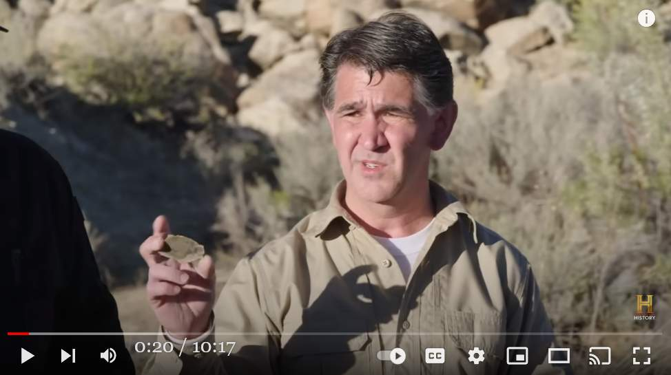 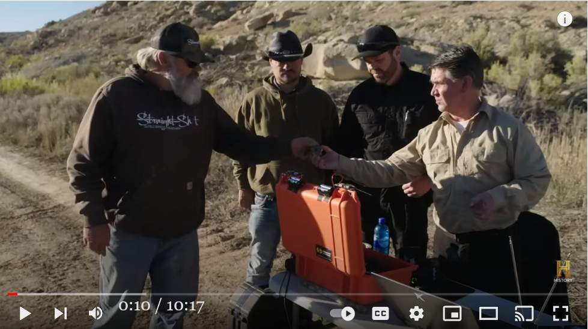 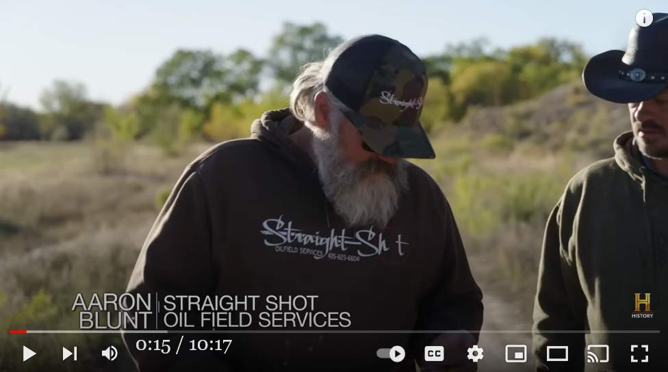音声書写（自動生成）
▼展開
0:01 well you guys ready to go at it again 0:02 yeah we're ready 0:04 aaron you're gonna want to see this 0:07 this is what came out of your tank this 0:09 material here it's it's rather brittle 0:11 out of the spoils that we went and 0:12 dumped over there 0:14 this came out of the pit yeah yeah 0:17 any chances to be coming off of your 0:19 equipment 0:20 there's no way you would come out of the 0:22 drill well i say we get at it and see if 0:24 we can 0:25 get you past that point yeah let's see 0:27 if we can break through there how far 0:29 back are we 0:30 we are about 0:32 311 foot okay and you're still hitting 0:36 up against that yeah still hitting up 0:37 against it 0:39 okay 0:45 boy that thing sounds like it's hitting 0:47 something oh what the heck is 0:49 hey guys come on down here 0:51 so we're coming up about 11 inches every 0:54 10 feet so it was it was directing you 0:56 downward and now you're still on it but 0:58 it's allowing you to go upwards right so 1:01 it that tells us something about the 1:02 shape of this hard layer 1:04 or this this whatever this impenetrable 1:07 thing is 1:08 so it sounds like you're describing kind 1:10 of a v it may not even be a v it could 1:13 even be 1:15 maybe a dome oh really because you're 1:17 not that sharp of a turn 1:20 i'm gonna be really fascinated to see 1:22 what's coming out of that hole so when 1:24 you guys get ready to dump the spoils 1:27 we definitely want to put a screen under 1:29 there and catch it we definitely want to 1:31 analyze that 1:41 there we go 1:47 more metal 1:51 check this out 1:54 wow look at all the metal yeah there's 1:56 one right and some of it's fairly 2:00 look how much of this stuff is in this 2:02 little spoils pile 2:05 right so there's no telling how much of 2:07 this metallic crap there is still in 2:09 that hillside 2:11 the fact that we're getting all these 2:12 thin layers of this substance and aaron 2:14 was hitting something so hard with his 2:16 drill rig he couldn't penetrate it are 2:18 we just chipping away at something much 2:20 larger under the mesa i don't know but 2:22 we have to find out we were all eager to 2:25 see just what the huge dome-shaped 2:27 object buried inside the mesa could be 2:30 so we brought out underground 2:31 visualization expert ryan markintel to 2:34 feed a specialized robotic camera into 2:36 the hole we drill 2:39 oh wow 2:40 so this goes right under the mesa 2:43 400 feet that way let's get the 2:45 equipment we can set it up hopefully you 2:47 can just climb down stand in that feed 2:49 it in easy 2:51 the robotics that we use are really 2:52 designed for confined spaces 2:55 great to use in purposes like this 2:57 so we brought out a vt-100 which is a 3:00 robot with a ptz camera on it 1080p 3:02 readout it can be configured in many 3:04 different forms today we're using tracks 3:06 just because we're navigating over 3:08 different types of terrain 3:09 everything seems to be working fine 3:12 uh what we'll do is we'll go ahead and 3:14 i'll get down there now and i'll go 3:15 ahead and put it in the hole okay and 3:16 then we'll go ahead and start and uh 3:18 we'll keep a visual on everything 3:20 all right so we will start recording 3:21 right now 3:27 let me uh at least get some here so it 3:29 doesn't have to work so hard 3:31 hey thomas if you wouldn't mind 3:34 i'm gonna go forward just 3:36 feed it into the hole as i'm going 3:38 forward okay 3:41 okay go ahead 3:50 tracks are moving fine thomas 3:53 oh yeah 3:55 oh there we go so we bring in this 3:57 camera that sits on crawlers 3:59 and it's designed to crawl up and it can 4:01 go up as far as a thousand feet 4:04 how far down is that we were a little 4:06 over 10 foot while ago 4:09 i'm actually looking 4:10 right now 4:12 at 4:13 what looks like a great big boulder that 4:15 looks like it may have actually fallen 4:18 right over that opening you see what i'm 4:19 talking about right there yeah 4:21 that's a big rock that is a big rock 4:23 that's a big rock 4:26 what are the odds of one which almost 4:28 looks like a perfectly round boulder 4:30 going and covering up that opening 4:33 gosh this ranch 4:35 it's odd how you say it's very 4:37 cylindrical that's so odd 4:40 it is just like it's been plugged it 4:41 almost looks like it was just a plug 4:43 that was stuck in place there hey dragon 4:45 tom you guys copy you want to get it 4:47 yeah travis go ahead 4:49 have you all found anything up there yet 4:51 we just found a great big boulder almost 4:54 perfectly round that fell down and 4:56 blocked the entrance 4:59 now that's a little bit crazy and 5:01 suspicious 5:02 just what the hell could be in this mesa 5:04 and what is preventing us from finding 5:06 out 5:09 we'll get it it's just 5:11 by these means it's not gonna happen 5:13 today 5:16 let's get this stuff cleaned up and get 5:17 out of here 5:19 thanks ryan oh thank you i appreciate 5:21 you guys 5:23 [Music] 5:29 hey gentlemen hey guys 5:32 we've got the analysis back from the lab 5:35 that did the scanning electron 5:36 microscope elemental analysis of that 5:39 material you guys pulled out of the 5:41 drill hole really yeah the next day eric 5:44 received a report from the materials 5:46 science and engineering department at 5:47 the university of utah about the metal 5:50 the guys drilled out of the mesa so we 5:53 all gathered in the command center to 5:54 review it and see what this huge 5:56 dome-shaped object might be made of 5:59 the data that they gave us from the 6:01 elemental analysis it's really 6:03 interesting on one side of the material 6:05 there's tellurium 6:07 and on the other side of the material 6:09 there's europium 6:11 delirium is a semiconductor material 6:14 that is used in solar panels the 6:16 europium 6:18 it's been experimentally measured that 6:21 under certain circumstances is a 6:22 superconductor really yeah the elements 6:26 found in this metal from deep inside the 6:28 mesa has properties just like those of a 6:30 semiconductor and a superconductor which 6:33 are both used in modern day electronics 6:35 like computer processors mri machines 6:38 electronic vehicles radios and even 6:40 smart phones 6:41 but why is it here on skinwalker ranch 6:45 and what's interesting is 6:46 tellurium is the second 6:49 uh 6:50 most rare element on the planet 6:54 same goes for europium it is actually 6:56 one of the most 6:57 uh rare elements uh on the planet also 7:01 that's interesting wow those things have 7:03 specific uses both of those materials 7:06 are used in developing modern quantum 7:08 computer systems so it sounds like we're 7:10 looking at a structured 7:12 material like as if it were perhaps 7:14 deliberately structured at least that's 7:16 what i'm reading into what you're saying 7:17 well how else do you get one of the 7:19 elements only on one side and one of the 7:21 elements only on the other side 7:23 well that's a lot of information to 7:26 digest 7:27 you know what are we hitting something 7:29 that we're not supposed to be finding 7:31 is there more at play here than that is 7:33 it 7:34 gosh if we want to go crazy some sort of 7:36 a craft or something like that that was 7:38 put in there that we're finally hitting 7:40 into that was never supposed to be 7:42 discovered i don't know 7:44 let's not forget now we have been told 7:47 many many stories about these deep 7:49 caverns the hill opening up and the ship 7:51 flying in so there's so many questions 7:54 why only one element on one side why one 7:56 on the other that why is it so wave for 7:58 thin why the hell is it in our mesa 8:00 there's so many questions that opens up 8:02 well looking at what we've got in our 8:03 hands i want to take these samples to a 8:05 metal or just i am hopeful that we might 8:07 be able to take samples like this and 8:08 put them in front of someone who does 8:10 this work and ask have you seen this 8:11 stuff good idea let's do that okay all 8:14 right let's do it 8:22 good morning good morning 8:24 hey travis taylor robbie adrian nice to 8:26 meet you sir eric bard nice to meet you 8:29 so you did the analysis of the samples 8:32 that we sent yes we did the samples that 8:35 we looked at are composed of different 8:37 elements like iron calcium 8:40 and plus oxygen okay the samples look 8:43 like they've been fused 8:45 now that's interesting 8:48 what among the rarer elements did you 8:50 see in the sample i'm surprised to see 8:53 magnesium 8:55 there is some evidence for manganese 8:58 aluminum and so on 9:00 way i understand it there's also trace 9:02 elements of europium and tellurium in 9:04 the sample yes 9:06 there is some presence of these rare 9:08 elements 9:10 okay they could be manufactured 9:13 this material was manufactured as 9:16 opposed to a natural occurrence yes 9:18 materials like these are 9:21 analogous to ceramic oxides they're 9:24 using special tiling to protect from 9:27 burning up due to reentry that's 9:29 interesting that's actually very 9:31 interesting 9:33 if this huge dome-shaped object in the 9:35 mesa is covered with the same kind of 9:37 materials that nasa uses to protect 9:39 space shuttles from burning up when they 9:41 re-enter our atmosphere 9:43 could the rumors we've heard about a 9:44 spacecraft being buried on skinwalker 9:46 ranch really be true 9:49 well i hope that we can find more 9:51 samples uh in the not too distant future 9:53 and get back out here with with more and 9:55 maybe get some more details and more 9:57 more data that may help us get to that 9:58 answer sure we'll be happy to help well 10:01 this has been real fantastic thank you 10:03 very much good luck with your enders 10:04 thank you thank youDeepL訳 原文不完全
▼展開
さてと......もう一回やるか？ ああ、準備万端だ アーロン、これを見てくれ これがあなたのタンクから出てきたものです この材料はかなりもろいです これはかなりもろいものです あそこに捨てられた これはピットから出たものです あなたの機器から出る可能性があるのは 装置から 出てくることはないだろう。 ドリルから出ることはないだろう。 できるかどうか そのポイントまで行けるかどうか。 あそこを突破できるかどうか どこまで後退した？ 約311フィート 311フィート（約3.5メートル）です。 まだ、その辺にいるのか？ それに対して オーケー 何かを殴っているような音がする 何かにぶつかってるみたいだ みんな、こっちへおいでよ 10フィートごとに約11インチずつ上がっていくので 10フィートごとに約11インチずつ上がってきているので 下を向いていたのが、今はまだその上にいて、でも 上方に行くことができるようになりました。 それは、この硬い層の形について何かを教えてくれます。 この硬い層の形 この硬い層の形や、この入り込めないもの ものです。 ということで、V字のような形をしているように聞こえます。 V字型かもしれませんし、V字でない可能性もあります。 でも ドームかもしれません。 そんなに急には曲がらないから 穴から何が出てくるか楽しみです。 その穴から何が出てくるか楽しみです。 穴から何が出てくるか楽しみだ その穴から何が出てくるか楽しみだ その穴の下に網を敷いて、それを受け止めたい。 分析する よし もっと金属を これを見て 見てください、このメタル！そう、これです。 1つで、そのうちのいくつかはかなり この中にどれだけのものがあるか見てみましょう 小さなゴミの山 この金属片がどれだけあるかはわかりません。 この金属製のゴミがまだ あの丘の中腹に このような薄い層が この物質の薄い層とアーロンは ドリルで何かを強く叩いて 貫通させることができなかったということは 私たちはメサの下のもっと大きなものを メサの下のもっと大きなものを削り取ってるんでしょうか？ しかし、私たちはそれを見つけなければなりません。 メサの中に埋まっている巨大なドーム状のものが何なのか 見てみたいと思っていました そこで私たちは、地下の可視化専門家である 地下の可視化専門家ライアン・マーキンテル（Ryan Markintel）を招き 特殊なロボティックカメラを送り込みました。 ドリルで開けた穴の中に おおっ メサの真下を通るんですね メートルです。 装置を設置します。 その中に入るだけでいい 簡単にできます 私たちが使っているロボットは、本当に 狭い場所でも使えるように設計されています。 このような用途に最適です。 そこで、私たちはVT-100を持ち出しました。 1080pのPTZカメラを搭載したロボットです。 読み取ることができ、様々な形に構成することができます。 今日はトラックを使っています。 様々な地形でナビゲートするため 様々な地形に対応できます すべてうまくいっているようです さて、これからどうするかだが......。 私は今そこに降り立ち、先に進みます。 穴の中に入れて、OK。 それから、先に進み、開始します。 すべてを見渡せるようにします では録画を開始します 今すぐ せめて......ここで少しだけでも......そうすれば そう簡単にはいきませんよ ねえトーマスもしよかったら このまま進めたいんですが 穴の中に入れるんだ 前進する よし 進め 線路は順調よ トーマス そうそう そうそう、このカメラで クローラーに乗せるカメラ 這いつくばるように設計されていて 1,000フィート上空まで行ける どれくらい下かというと、さっきまで 10フィート以上先 今見ているのは 今 で 大きな岩のようなものを見ています。 実際に落ちてきたようだ あの開口部の上に落ちているように見えますが、これが何だかわかりますか？ あそこに見えるのは あれは大きな岩だ あれは大きな岩だ 大きな岩だ この岩の確率は？ 完璧に丸い岩のように見えるが 開口部を覆っている ああ、この牧場は 円筒形と言うのも変な話だ 円筒形だ まるで栓がされているようで まるで栓のように まるで栓をしているようだ トム......聞こえるか......手に入れたいか？ ああ トラヴィス 何か見つけたか？ 大きな岩を見つけたんだ 完璧に丸い岩が落ちてきて 入り口を塞いでいた それはちょっと異常で 怪しい このメサに一体何があるのか？ そして、その発見を阻むものは何なのか 見つけ出す 私たちはそれを手に入れることができる この手段では......無理だ 今日 これを片付けてから ここから出よう ありがとう、ライアン...ありがとう......感謝するよ 君たち [音楽] やあ、みなさん やあ、みなさん 分析結果が出ました 走査型電子顕微鏡による 走査型電子顕微鏡による元素分析が 元素分析を行いました。 次の日、エリックは の材料科学・工学部門から報告書が届きました。 ユタ大学の材料科学・工学部から ユタ大学材料工学部から報告書が届きました。 ユタ大学の材料科学工学部から報告を受けました。 司令室に集まって この巨大なドーム状の物体が何からできているのか この巨大なドーム状の物体は何でできているのだろう？ 元素分析のデータを見ると 元素分析のデータを見ると、実に興味深いことがわかります。 興味深いことに、材料の片側には テルルがあります もう片方の面には ユーロピウムがあります。 デリリウムは半導体材料で 半導体材料で、ソーラーパネルに使用されています。 ユウロピウム 実験的に測定されています。 超伝導体であることが 超伝導体です。 この金属はメサの奥深くから発見されたもので この金属に含まれる元素は、半導体や超伝導体と同じような性質を持っています。 半導体と超伝導体のような性質を持っています。 現代の電子機器に使われている コンピューター・プロセッサー MRI装置 電子自動車、ラジオ、そして スマートフォンにも でも、なぜここ、スキンウォーカー・ランチにあるんだ？ 興味深いのは テルルは2番目の えー 地球上で最も稀な元素である ユーロピウムも同じだ 地球上で最も 地球上で最も希少な元素の一つです。 興味深いことに、これらの物質には 特定の用途があります。 現代の量子コンピューターシステムの開発に使われています。 量子コンピュータの開発に使われています。 構造化された材料を見ているようです。 構造化された材料を見ているようです。 構造化されているようです。 少なくとも私はそう思っています。 他にどのような方法があるのでしょうか。 片方だけで、もう片方は 片方だけの要素 それは多くの情報を消化する必要があります。 消化する 何か、見つけてはいけないものを 見つけてはいけないものなのか それ以上のものがあるのでしょうか？ それは もし、私たちが狂気じみたことをしたいのなら、ある種の 工作か何かで ある種の工作物、あるいはそのようなものがあって、それがついに 発見されるはずのないものに 発見されたのでしょうか？ 忘れてはならないのは、私たちは、このような深い場所についての多くの物語を この深い洞窟について、たくさんの話を聞かされてきました。 洞窟があり、丘があり、船がある。 船が飛んできたり......疑問は尽きない なぜ片方だけなのか、なぜ片方だけなのか なぜ片方だけなのか、なぜもう片方だけなのか。 なぜメサにあるのか？ 多くの疑問が浮かびます さて、手元にあるものを見てみると このサンプルを使って このようなサンプルを採取して このようなサンプルを取って このようなサンプルを、この仕事をする人の前に置いて このようなサンプルを、この仕事をする人の前に置いて、「これ見たことありますか？ と聞いてみたいですね。 よし、やってみよう おはようございます おはようございます トラビス・テイラー ロビー・エイドリアンです エリック・バードです よろしくお願いします 私たちが送ったサンプルの 分析は お送りしたサンプルの分析をされましたか？ 私たちが見たサンプルは鉄やカルシウムなど 鉄分 カルシウム そして酸素です 溶融したように見えます それは興味深いですね 珍しい元素は何ですか？ を見たのですが、マグネシウムがあったのには驚きました。 マグネシウム マンガンもあります アルミニウムなどです。 私の理解では、微量の ユーロピウムとテルルの微量元素もあります。 含まれています これらの希少元素は 存在します 製造された可能性があります この物質は製造されたもので 自然界に存在するのではなく このような材料は セラミック酸化物のようなものです。 再突入による燃焼から守るために特殊なタイルを 再突入による燃焼を防ぐために、特殊なタイルを使用しています。 興味深いですね。 興味深い もし、この巨大なドーム状の物体が メサにある巨大なドーム状の物体が、NASAが保護するために使っているのと同じ種類の素材で覆われているとしたら メサの巨大なドーム状の物体が、NASAがスペースシャトルの燃焼を防ぐために使っているのと同じ種類の材料で スペースシャトルが大気圏に突入したときに燃え尽きるのを防ぐために 大気圏に再突入したときに燃え尽きるのを防ぐために スキンウォーカーに宇宙船が埋まっているという噂は 宇宙船がスキンウォーカー牧場に埋められたという 噂は本当なのか？ そう遠くない未来に そう遠くない未来に そう遠くない未来に、もっと多くのサンプルを見つけて もっと詳細な情報を得ることができるかもしれませんし その答えに辿り着くための、より詳細なデータを 私たちは喜んでお手伝いしますよ。 これは本当に素晴らしいことです ありがとうございました エンダーの幸運を祈る ありがとうございました ありがとうございました動画(10:17)
INEXPLICABLE FIND Inside the Mesa | The Secret of Skinwalker Ranch (Season 3)コメント
- Erik Bard (Principal Investigator: 主任調査員)が Aaron Blunt（ボーリング作業の担当者）にErik: Aaron you're gonna want to see this. this is what came out of your tank. This material here. It's rather brittle. Out of the spoils that we went and dumped over there. AARON: This came out of the pit? Yeah yeah. Erik: Any chances to be coming off of your equipment? これを見ろよ、AARON。これがお前のタンクから出てきたものだ。 この素材は かなり脆い。 掘り出されて、あそこに吐き出されたものです Aaron:これは穴から出てきたのか？ そうです、そうです。 あなたの装置から出た可能性は？と質問したところまでは良い。 - だが、Aaron: There's no way. It would come out of the drill. Aaron: ありえませんね。ドリルから出たんだろうという返事を聞いて安心して引き下がったのはまずい。なぜ「ありえない」と言えるのか、その具体的な根拠を確認すべきだった。 - 問題の金属片はドリルから（＝台地の中から）出てきたものではない。 - ドリルが掘り出したドロは ・タンクの水→ホース→ポンプ→パイプ→ドリル→パイプ→（ドロを貯めるための地面に掘られた大きな窪み→）ホース→ポンプ→大きなタンク→金網のフィルター という経路で取り出されている。 - こういった掘削用の機材はリース品（掘削会社が資産として所有することは税制上からもメンテナンス管理の都合からもまずない）であり、あらゆる現場で、それもきついスケジュールの中で酷使される。ということは… … … … … (2022-11-02 end)
(2023-01-18 begin)前置き
- 時間がとれなくて放置状態だったが、この件を完結させておく。前回までの記事の情報だけで十分足りるとは思うが… - 一部、文章の繰り返しになるが、一箇所にまとめたほうがわかりやすい筈。結論
- 問題の金属片はドリルから（＝台地の中から）出てきたものではない。 - ドリルが掘り出したドロは ・タンクの水→ホース→ポンプ→パイプ→ドリル→パイプ→（ドロを貯めるための地面に掘られた大きな窪み→）ホース→ポンプ→大きなタンク→金網のフィルター という経路で取り出されている。 - こういった掘削用の機材はリース品（掘削会社が資産として所有することは税制上からもメンテナンス管理の都合からもまずない）であり、あらゆる現場で、それもきついスケジュールの中で酷使される。 - 今回、Skinwalker ranch の台地のボーリングに駆り出されたボーリング機材も、様々な現場で酷使されていたものが、現場のスケジュールの合間を見て、ここに回されてきたのだと想定しうる。当然、機材を構成する ・タンク、ホース、ポンプ、パイプ を作業後に毎回、きれいに清掃する手間をかけている筈などない。コストと時間の無駄でかしかないし、清掃の必要性自体が「通常の現場」なら全くない。よって、作業に熟練すればするほど日常的な作業手順の中に「ボーリング機材を清掃する」などという発想自体が存在しなくなる。 - それゆえ、タンク、ホース、ポンプ、パイプの中には他の現場で扱った土壌や汚泥の残滓が付着したまま Skinwalker ranch のボーリングに投入された。 - つまり…。ボーリングで出てきた「謎の金属片」は他の ・掘削現場や ・土壌回収・運送・廃棄現場 の現場の土壌に含まれていた残滓。たぶん元は開発企業や工場の跡地だった現場から持ち込まれた金属片だろう。 (2023-01-18 end)
初出
Skinwakler ranch : 現場の台地をボーリングしたら謎の金属片が出現 （→ この謎を合理的に説明） （全体） (2023-01-18)